05:00
Act II: Literature review
On the shoulders of giants 
MdC. Fabio A. CRUZ SANCHEZ
Pr. Mauricio Camargo
Pr. Mauricio Camargo
Université de Lorraine
January 20, 2026
Learning objectives of today
- 🧠 Knowledge :
- Sensibilization on what a literature review process is.
- 🔨 Know-how :
- Search on pertinent scientific databases
- How to start to read scientific article
- Critical thinking of research papers
- Visualization of literature review features.
- ✍Competence :
- Be able to structure a literature review.
Where are we ?
Agenda for today
Where are we ?
How to read an Article ?
How to do a Literature Review?
The “Gap”
Structuring your paper
Mental model for the research

As Example at ERPI

General Idea

From General Idea → Questions

From Questions → Concepts

From Concepts → Research question

From Concepts → Research question
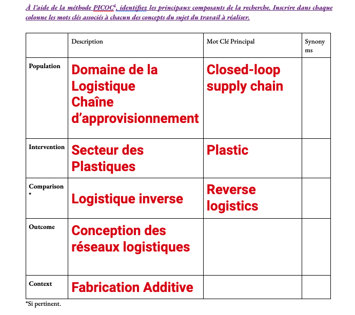
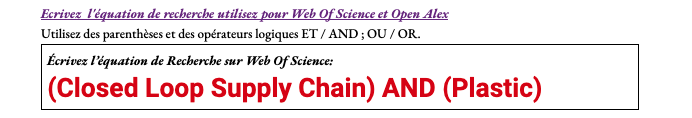
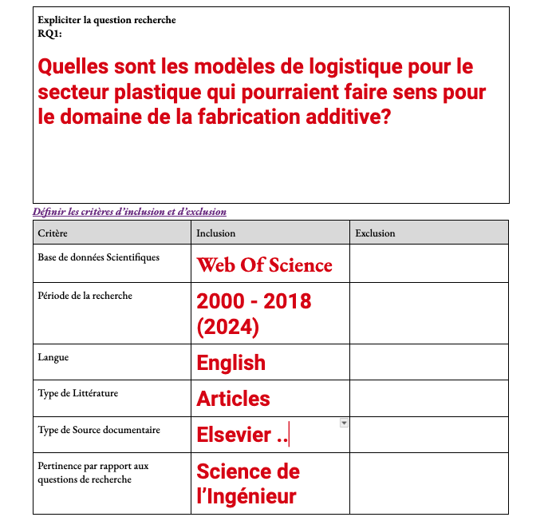
From Concepts → Research question
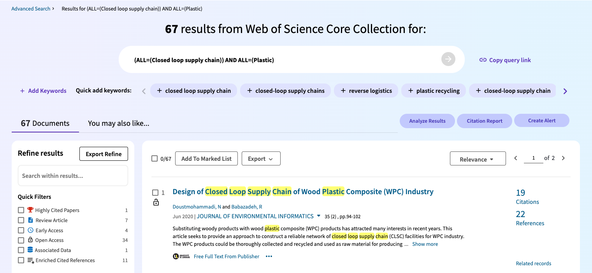
From Research question → Bibliometric
1. Performance Analysis

Document sous ARCHE
Source: Donthu, N., Kumar, S., Mukherjee, D., Pandey, N., Lim, W.M., 2021.
How to conduct a bibliometric analysis: An overview and guidelines.
Journal of Business Research 133, 285–296.
From Research question → Bibliometric
1. Performance Analysis → Indicateurs sur le publications


From Research question → Bibliometric
1. Performance Analysis → Indicateurs sur les citations


From Research question → Bibliometric
1. Performance Analysis → Indicateurs liées aux publications-citations


From Research question → Bibliometric
2. Cartographie

Document sous ARCHE
Source: Donthu, N., Kumar, S., Mukherjee, D., Pandey, N., Lim, W.M., 2021.
How to conduct a bibliometric analysis: An overview and guidelines.
Journal of Business Research 133, 285–296.
From Research question → Bibliometric
2. Cartographie → Analyse des Co-auteurs
Results de VOSviewer
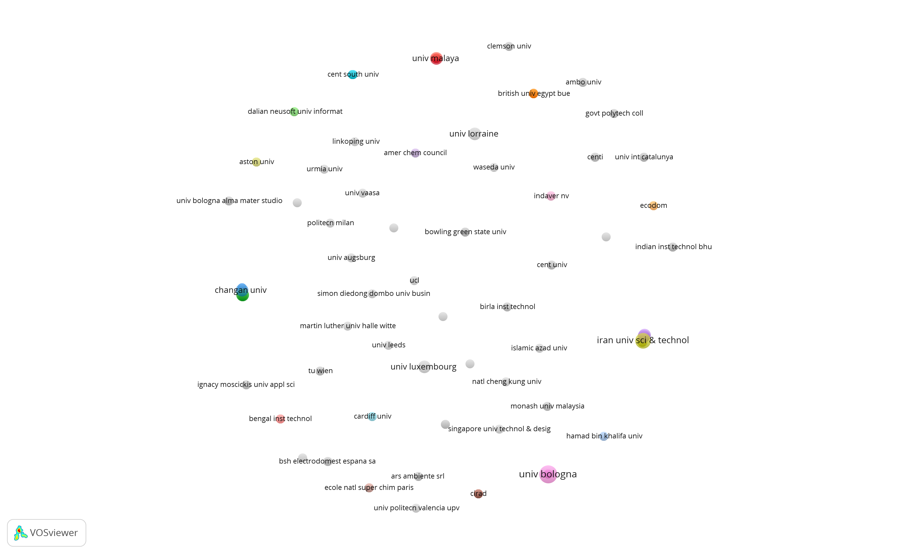
From Research question → Bibliometric
2. Cartographie → Analyse des Co-auteurs
Results de VOSviewer
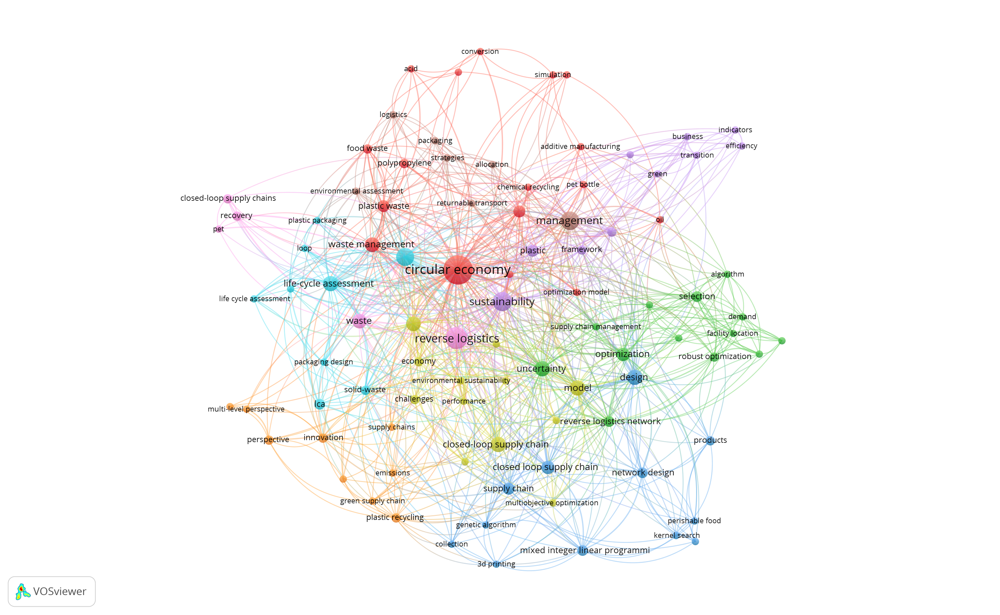
From Research question → Bibliometric
3D-Printing Based Distributed Plastic Recycling: A Conceptual Model for Closed-Loop Supply Chain Design
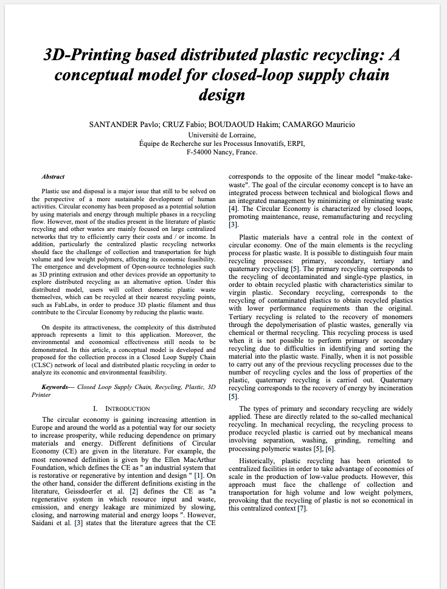
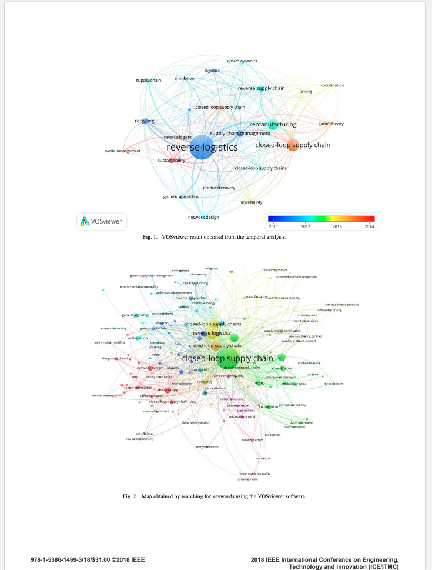
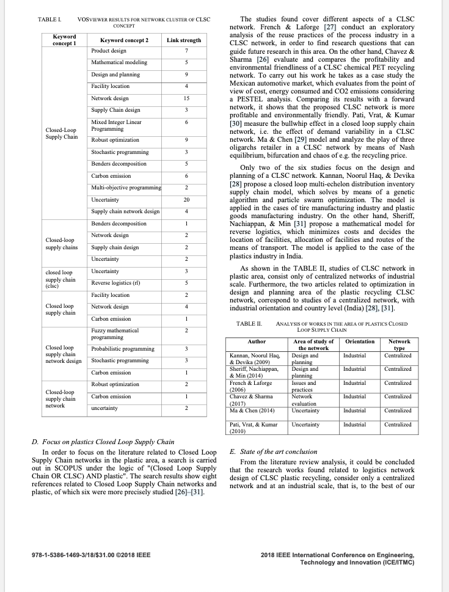
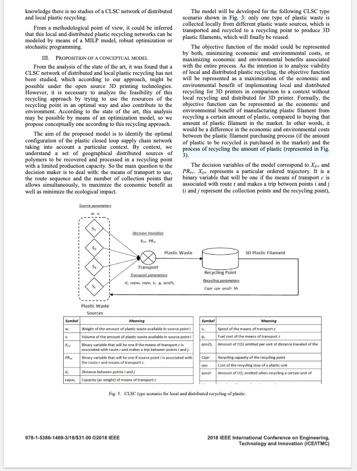
Source: Pavlo, S., Fabio, C., Hakim, B., Mauricio, C., 2018.
3D-Printing Based Distributed Plastic Recycling: A Conceptual Model for Closed-Loop Supply Chain Design,
in: 2018 IEEE International Conference on Engineering, Technology and Innovation (ICE/ITMC). IEEE, pp. 1–8.
The research process
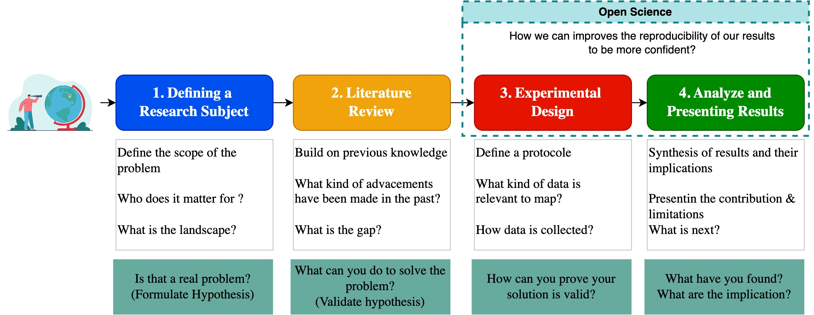
How to read an Article ?
Agenda for today
Where are we ?
How to read an Article ?
How to do a Literature Review?
The “Gap”
Structuring your paper
Let’s do step by step analysis …
How to read an Article ?
How to read an Article ?
💡 Tip 1 Identify the context of this paper !!
- Scientific database: Elsevier
- Journal : Journal of Bussiness Research
- Published : 2021
- Citations
How to read an Article ?
💡 Tip 2
What and Who?
- A good title gives the purpose of the paper !!
- People :
- University
- Domaine
- Country
- Contacts !!
- University
- DOI: Digital Object Identifier (DOI)
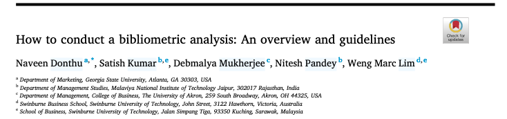
.
.
.
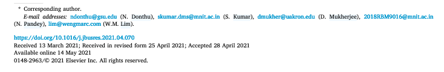
How to read an Article ?
💡 Tip 3 Start by the Outline !!
How to read an Article ?
💡 Tip 4: Méthode AIC
- Title ✅
- 🔎 Abstract
- 🔎 Introduction
- Literature review
- Methodology
- Results
- Discussion
- 🔎Conclusion
- References
AIC Reading method
For screening read : Title, Journal, keywords and Abstract
For detailed synthesis use AIC:
- Abstract → Summary of the paper🔎
- Introduction → Context of problem and research, gap, summary of what is done
- Conclusions → Summary of results and importance of results given the context.
The abstract
The minimal viable product of a research.
- What’s the topic?
- What’s the problem? (Is it important? )
- What’s the research question?
- What is the purpose ?
- How you resolved it?
- Implications for future ?
Exemple 1
- What’s the topic?
- What’s the problem?
(Is it important? ) - What’s the research question?
- What is the purpose ?
- How you resolved it?
- Implications for future ?
Source: Donthu, N., Kumar, S., Mukherjee, D., Pandey, N., Lim, W.M., 2021. How to conduct a bibliometric analysis: An overview and guidelines. Journal of Business Research 133, 285–296.
Exemple 1
- What’s the topic?
- What’s the problem?
(Is it important? ) - What’s the research question?
- What is the purpose ?
- How you resolved it?
- Implications for future ?
Exemple 2
- What’s the topic?
- What’s the problem?
(Is it important? ) - What’s the research question?
- What is the purpose ?
- How you resolved it?
- Implications for future ?
Source: Osorio et al (2019). Design and management of innovation laboratories: Toward a performance assessment tool.
Creativity and Innovation Management 28, 82–100.
Exemple 2
- What’s the topic?
- What’s the problem?
(Is it important? ) - What’s the research question?
- What is the purpose ?
- How you resolved it?
- Implications for future ?
Source: Osorio et al (2019). Design and management of innovation laboratories: Toward a performance assessment tool.
Creativity and Innovation Management 28, 82–100.
Exemple 3
- What’s the topic?
- What’s the problem?
(Is it important? ) - What’s the research question?
- What is the purpose ?
- How you resolved it?
- Implications for future ?
Source: Marche, et al. (2022)., Qualitative sustainability assessment of road verge management in France:
An approach from causal diagrams to seize the importance of impact pathways. Environmental Impact Assessment Review 97, 106911.
05:00
Exemple 3
- What’s the topic?
- What’s the problem?
(Is it important? ) - What’s the research question?
- What is the purpose ?
- How you resolved it?
- Implications for future ?
Source: Marche, et al. (2022)., Qualitative sustainability assessment of road verge management in France:
An approach from causal diagrams to seize the importance of impact pathways. Environmental Impact Assessment Review 97, 106911.
Exemple 4
- What’s the topic?
- What’s the problem?
(Is it important? ) - What’s the research question?
- What is the purpose ?
- How you resolved it?
- Implications for future ?
Source: Gabriel, et al. (2016), Creativity support systems: A systematic mapping study,
Thinking Skills and Creativity 21, 109–122.
05:00
Exemple 4
- What’s the topic?
- What’s the problem?
(Is it important? ) - What’s the research question?
- What is the purpose ?
- How you resolved it?
- Implications for future ?
Source: Gabriel, et al. (2016), Creativity support systems: A systematic mapping study,
Thinking Skills and Creativity 21, 109–122.
Mental model when reading an abstract
- 🌍 Topic → the writer provides background factual information.
- ⚠️ Problem → The writer presents the gap/problem to treat
- 🔎 Research Gap → the writer states the limits of current knowledge.
- 🎯 The purpose : the writer presents the general aim and the specific aim of the study.
- 📜 Methodology → the writer summarises the methodology and provides details.
- 📊 Results → the writer indicates the achievement of the study.
- 🚀 Perspectives → the writer presents the implications of the study.
Your turn !
05:00
- What’s the topic?
- What’s the problem?
(Is it important? ) - What’s the research question?
- What is the purpose ?
- How you resolved it?
- Implications for future ?
Video of the scene: https://www.youtube.com/watch?v=GgiK-HWKPjw
Source: Leone, L. The Ratatouille paradox. An inductive study of creativity in haute cuisine. Technovation (2018)
How to do a Literature Review?
Agenda for today
Where are we ?
How to read an Article ?
How to do a Literature Review?
The “Gap”
Structuring your paper
Evidence in Science

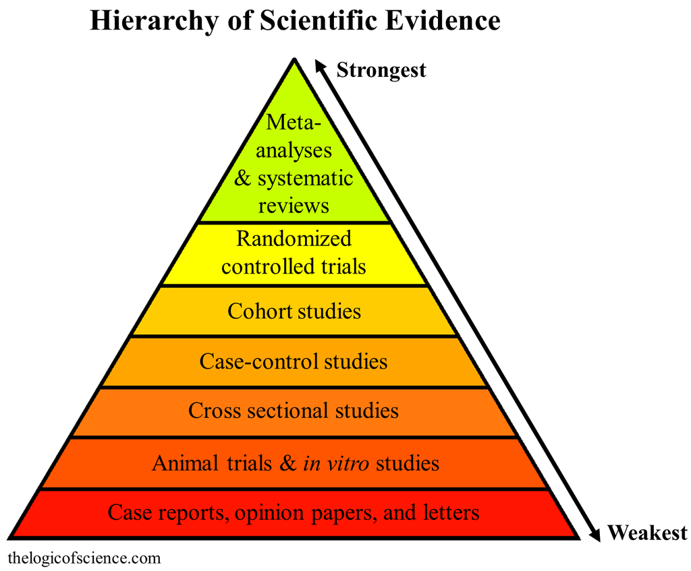
Literature review

Steps for a Literature Review
Literature review: The Context
Take the time to planning because it has the major impact at the end.
Literature review: Planning
Goal: Identification of material recycling approaches in the Additive Manufacturing contexts (commercial and open-source)

Literature review: Planning

Literature review: Planning

Literature review: Planning

Grid lecture
Literature review: Conducting

Literature review: Reporting

Structure of Literature
- Title
- Abstract
- Introduction
- Literature review
- Methodology
- Results
- Discussion
- Conclusion
- References
Source: Cruz Sanchez, F.A., Boudaoud, H., Camargo, M., Pearce, J.M., 2020.
Plastic recycling in additive manufacturing: A systematic literature review and opportunities for the circular economy.
Journal of Cleaner Production 264, 121602.
Examples at ERPI
Source: Hoang, G. T. T., L. Dupont, and M. Camargo.
Application of Decision-Making Methods in Smart City Projects: A Systematic Literature Review.
Smart Cities, 2 (3), 433–452.” 2019,
Examples at ERPI
Source: Fonseca, Juan D., et al.
Trends in design of distributed energy systems using hydrogen as energy vector: A systematic literature review.
International journal of hydrogen energy 44.19 (2019): 9486-9504.
Examples at ERPI
Source: Arrieta-Escobar, Javier A., et al.
3D printing: An emerging opportunity for soil science.
Geoderma 378 (2020): 114588.
A useful ressource
Siddaway, A.P., Wood, A.M., Hedges, L.V., 2019.
How to Do a Systematic Review: A Best Practice Guide for Conducting and Reporting Narrative Reviews, Meta-Analyses, and Meta-Syntheses.
Annual Review of Psychology 70, 747–770.
Literature review – Ethics
Report on your literature findings and beware of:
- Purposely misrepresenting the work of other authors.
Plagiarism – the use of another’s original words, arguments, or ideas as though they were your own, even if this is done in good faith, out of carelessness, or out of ignorance.
- Importance of the References
Questions
The “Gap”
Agenda for today
Where are we ?
How to read an Article ?
How to do a Literature Review?
The “Gap”
Structuring your paper
In Science …
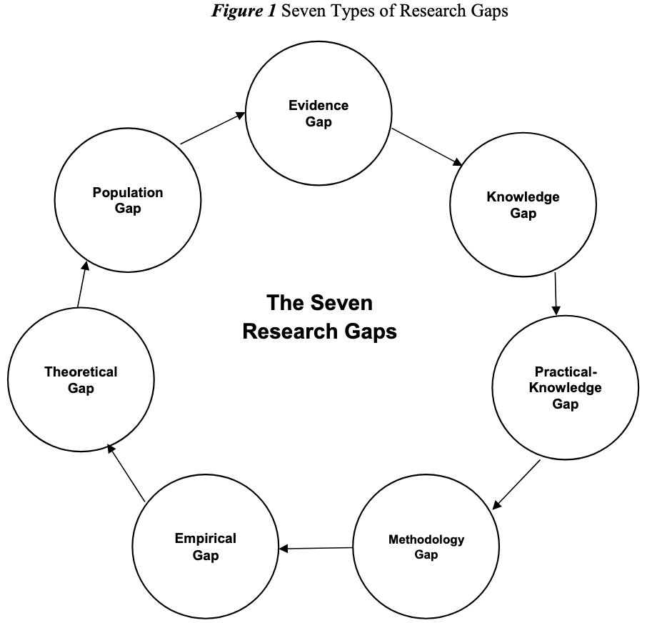
We don’t sell products!! .. We sell Gaps!
Source: Miles, D.A., 2017. A Taxonomy of Research Gaps: Identifying and Defining the Seven Research Gaps.
Evidence Gaps
An evidence gap occurs with a provocative exception arises if a new research finding contradicts widely accepted conclusions.
If results from studies allow for conclusions in their own right, but are contradictory when examined from a more abstract point of view.
Knowledge Gaps
- Most common gap.
- knowledge may not exist in the actual field to theories and literature from related research domains.
- it might be the case that results of a study differs from what was expected
Practical-Knowledge Gaps
Tends to be a discrepancy that can motivate new research in this direction.
A practical–knowledge (action-knowledge) conflict arises when the actual behavior of professionals is different from their advocated behavior.
Research could seek to determine the scope of the conflict and to uncover the reasons for its existence
Methodological Gap
It deals with the conflict that occurs due to the influence of methodology on research results..
This gap addresses the conflicts with the research methods in the prior studies and offers a new line of research that is divergent from those research methods.
It might be useful to vary research methods, especially if certain research topics have been mainly explored using a singular or common method
Empirical Gap
It deals with gaps in the prior research.
This conflict deals with the research findings or propositions need to be evaluated or empirically verified.
The empirical gap often addresses conflicts that no study to date has directly attempted to evaluate a subject or topic from an empirical approach
Theoretical Gap
It deals with the gaps in theory with the prior research.
If one phenomenon is being explained through various theoretical models, similar to a methodological gap conflict, there might be a theoretical conflict.
Researchers and scholars could examine whether one of those theories is superior in terms of the gap in the prior research.
Theoretical gaps are a common occurrence in examining prior research on a phenomenon
Population Gap
There are always underserved populations that have been under-researched.
The type of research regarding the population that is not adequately represented or under-researched in the evidence base or prior research (e.g., gender, race/ethnicity, age and etic)
In summary
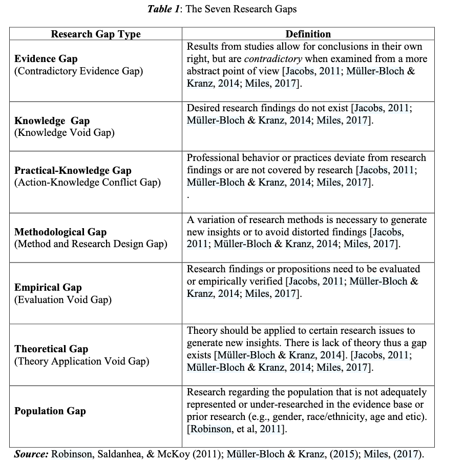
Source: Miles, D.A., 2017.
A Taxonomy of Research Gaps: Identifying and Defining the Seven Research Gaps.
And how we do bussinness !
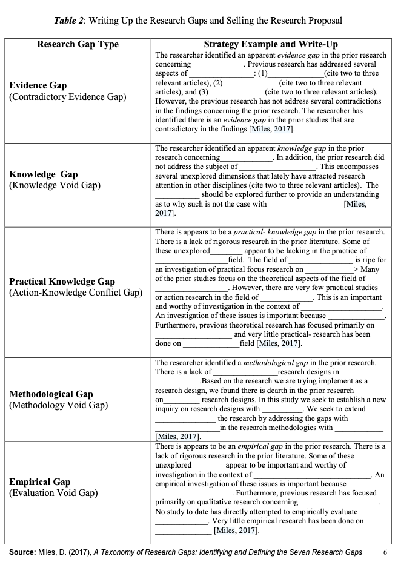
Source: Miles, D.A., 2017.
A Taxonomy of Research Gaps: Identifying and Defining the Seven Research Gaps.
Your turn !
Structuring your paper
Agenda for today
Where are we ?
How to read an Article ?
How to do a Literature Review?
The “Gap”
Structuring your paper
The scientific history

The scientific history

Abstract
Example of Nature:

Introduction
- 1er Paragraphe: établir le contexte, introduire le sujet. Il doit établir l’importance du sujet de recherche
- 2ème : établir un lien avec la littérature existante
- 3ème : établir clairement le “Gap to be filled”
- 4émé Expliquer comment on a traité le sujet
- 5èmé :“Annoncer la couleur” des résultats
- Enfin : Décrire la structure de l’article
Methodology

Results

Discussion & Conclusions

The scientific history
Some web ressources for writing
Rédiger un article scientifique par David Lindsay, Pascal Poindron
Writing a scientific article: A step-by-step guide for beginners


Introduction to Scientific Research